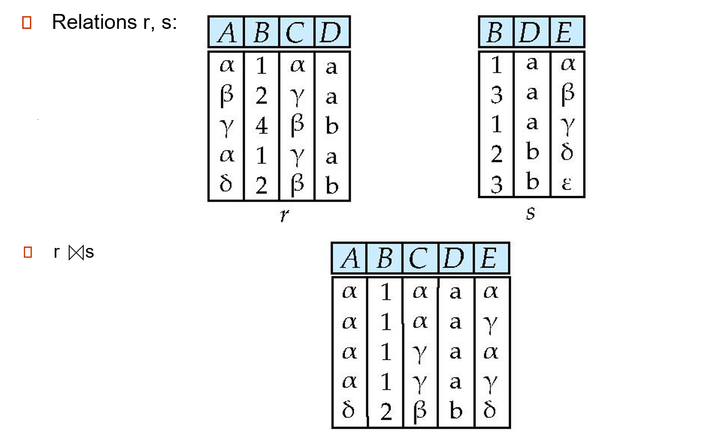

数据库基础⚓︎
约 3195 个字 127 行代码 预计阅读时间 18 分钟
阅读前须知
这份笔记是我暑假匆匆学习 DB 留下的「草稿」，仅供本人参考（我要完成两个小的 Project，有 ddl（悲）），没什么价值。之后系统学习 DB 的时候会有一系列更完善的笔记（等 2025 年春夏）。
什么是数据库？
数据库是结构化信息或数据的有序集合，一般以电子形式存储在计算机系统中。通常由数据库管理系统 (DBMS) 来控制。在现实中，数据、DBMS 及关联应用一起被称为数据库系统，通常简称为数据库。
by Oracle
分类：
 关系型数据库（比如 mysql 等）：建立在关系模型基础上的数据库，借助于关系代数等数学概念和方法来处理数据库中的数据。
关系型数据库（比如 mysql 等）：建立在关系模型基础上的数据库，借助于关系代数等数学概念和方法来处理数据库中的数据。- 非关系型数据库
下面主要介绍的是关系型数据库
关系模型⚓︎
- 关系(relation)的概念：\(R = (A_1, A_2, \dots, A_n)\) 被称为关系模式(relation schema)，其中 \(A_1, A_2, A_n\) 被称为属性(attributes)
- 人话：数据库的表对应「关系」，表的字段对应「属性」，表中的每一行数据形成了一个「元组」(tuple)（或者说「记录」(record)）
- 键(key)
- 超键(super key)：由一个或多个属性组成，用来确定唯一的元组
- 候选键(candidate key)：最小的超键
- 候选键的子集不应该是候选键，否则就不是候选键
- 可能有不止一个候选键
- 主键(primary key)：由开发者选定的唯一的候选键
- 外键(foreign key)：用于保证数据在两个表间的一致性
- 外键依照另一张表的主键建立，外键和该主键的数据类型相同
- 其中拥有外键的表被称为子表，提供主键的表被称为父表
- 若从父表中删除的数据与子表有关联，则会报错
- 向子表插入数据时，确保外键的值对应父表中的主键值是存在的或者为空
-
查询(query)操作
-
选择(SELECT)：\(\sigma_{p}(r) = \{t\ |\ t \in r \wedge p(t) \}\)，从关系 r 中找出符合条件 p 的元组

-
投影(project)：\(\Pi_{A_1, A_2, \dots, A_k}(r)\)，挑出关系 r 中的指定属性 \(A_1, A_2, \dots, A_k(k \le n)\)，形成一个新的关系
- 结果可能会出现重复的元组，需要去重

- 结果可能会出现重复的元组，需要去重
-
并(union)：\(r \cup s = \{t\ |\ t \in r \vee t \in s\}\)，取两个关系的并集

-
差(difference)：\(r - s = \{t\ |\ t \in r \wedge t \notin s\}\)，取两个关系的差集

-
笛卡尔积：\(r \times s = \{\{t, q\}\ |\ t \in r \wedge q \in s\}\)

-
其他操作
-
交(intersection)：\(r \cap s\)，取两个关系的交集
-
自然连接(natural JOIN)：\(r \bowtie s\)，两个关系的元组中若有部分相同的属性值，保留这相同的部分，对于不同的属性值取笛卡尔积，形成一个新的关系（包含两个关系的所有属性）
 -
内部连接(inner JOIN)：\(r \mathop{\bowtie}\limits_{condition} s\)，先 \(r \times s\)，后根据条件选择元组，形成新的关系
-
外部连接(outer JOIN)
- 左连接：\(r \ltimes s = (r \bowtie s) \cup \{null, \dots, null\} \times (s - \bigcap\limits_R(r \bowtie s))\)
- 右连接：\(r \rtimes s = (r \bowtie s) \cup (r - \bigcap\limits_R(r \bowtie s)) \times \{null, \dots, null\}\)
- 全连接：\(r\)⟗\(s = (r \bowtie s) \cup (r - \bigcap\limits_R(r \bowtie s)) \times \{null, \dots, null\} \cup \{null, \dots, null\} \times (s - \bigcap\limits_R(r \bowtie s))\)


-
半连接(semi JOIN)：\(r \ltimes_{\theta} s\)，保留 \(r\) 能与 \(s\) 相连的元组

-
除法(division)：\(r \div s\)


-
-
MySQL 语法⚓︎
注意
- 一条完整的 MySQL 语句以分号结尾
- 书写习惯：关键词一般用大写表示
- 方括号表示可选参数
- 如果一条 MySQL 语句太长，可以适当地换行（第二行开始前面都会有
->符号，表示新的一行，但还是在同一条语句内）
连接⚓︎
要使用 MySQL，需要先输入以下命令进入 MySQL 命令行界面：
-u：指定用户名-p：需要输入密码
注：如果安装了 MyCLI，输入
mycli也可以达到同样效果。
退出连接：
数据类型⚓︎
- 字符串
CHAR(size)：定长的字符串（size为字符个数在 0-255 之间，默认为1）VARCHAR(size)：变长的字符串（size为字符个数，在 0-65535 B 之间）BINARY(size)：类似CHAR()，但存储的是二进制字符串TEXT(size)：存储最大长度为 65535 B 的字符串BLOB(size)：二进制形式的长文本数据（size范围为 0-65535 B）
- 数值
BOOL/BOOLEAN：零值表示false，非零值表示trueINT/INTEGER(size)：介于 \(-(2^{31}) \sim 2^{31}+1\) 的整数（size指定最大显示宽度）FLOAT/DOUBLE(size, d)：单精度/双精度浮点数（size表示总位数，d表示小数位数）（之后的版本会逐渐废除这个类型，用DOUBLE替代）FLOAT(p)：如果p位于 0-24 之间，数据类型为FLOAT()；如果p位于 25-53 之间，数据类型为DOUBLE()DECIMAL(size, d)：定点数，格式同浮点数
- 日期、事件
DATE：日期格式为 YYYY-MM-DDTIME：日期格式为：HH:MM:SSDATETIME：日期-时间格式为 YYYY-MM-DD hh:mm:ssTIMESTAMP：时间戳，格式同DATETIMEYEAR：日期格式为：YYYY
数据库命令⚓︎
-
创建新的数据库：
CREATE DATABASE [IF NOT EXISTS] database_name [CHARACTER SET charset_name] [COLLACT collation_name];IF NOT EXISTS：避免数据库的重复创建（重复创建会报错）CHARACTER SET charset_name：指定字符集COLLACT collation_name：指定排序规则
-
选择指定数据库（之后的 SQL 操作都在该数据库上进行）：
或者在进入 MySQL 时直接选定数据库
-
列出所有数据库：
-
删除指定数据库：
IF EXISTS：避免删除不存在的数据库（会报错）
数据表命令⚓︎
-
查看数据表：
-
创建数据表：
columnx表示字段名，typex表示对应的数据类型-
用于字段的特殊关键字：
AUTO_INCREMENT：用于创建一个自增的列（一般用于主键）-
PRIMARY KEY：指定某列为主键（可一次指定多列，用逗号间隔） -
NOT NULL：确保字段不为空（如附上该关键字，字段为空会报错）
-
可以像创建数据库一样在后面跟上
CHARACTER SET和COLLATE子句 - 还可以跟上
ENGINE子句，指定存储引擎
-
删除数据表：
IF EXISTS：避免删除不存在的数据表（会报错）- 如果想要仅删除数据而保留整个数据表的结构，可使用下面的语句：
- 删除数据表前需要考虑外键约束的问题
CRUD⚓︎
所谓 CRUD，指的是 MySQL 中最基本的「增删查改」操作：create、retrieve、update、delete。
-
插入数据：
- 如果要向所有列插入数据，可以省略列名
- 如果某列带有
AUTO_INCREMENT关键字，那么该列对应的值可设为NULL（作为占位符），MySQL 会自动设置它的值 - 插入多行数据：
-
查询数据：
SELECT column1, column2, ... FROM table_name [WHERE condition] [ORDER BY column_name1 [ASC | DESC], column_name2 [ASC | DESC], ...] [LIMIT number];-
WHERE condition子句用于指定过滤条件（一般使用主键，使查询更加高效），MySQL 只返回符合条件的数据。condition可以包含以下内容：- 比较运算：
=（等号）、!=、<>（均表示不等号）、<、<=、>、>= - 逻辑运算：
AND、OR、NOT -
模糊匹配：
LIKE（默认不区分大小写）pattern表示匹配模式，通常要用到以下符号：%：类似正则表达式的*，表示任意字符（比如'q%'表示以'q'开头的任意字符串）_：占位符，表示一个字符（比如'_q%'表示第二个字符为'q'的任意字符串）
-
IS NULL、IS NOT NULL INBETWEENORDER BY column_name1 [ASC | DESC], column_name2 [ASC | DESC], ...：根据某（些）列进行排序（默认为升序ASC，降序用DESC表示）
- 如果指定多列，则按照顺序先按第一个指定列排序，再按第二个排序，以此类推
- 列名可以用对应的位次替代（整数，从
1开始） - 关键字
NULLS FIRST和NULLS LAST分别指定将某个字段为NULL的数据行放在前面或者后面
- 比较运算：
-
LIMIT number：限制返回的数据行数 - 可以一次性查询多张表，用逗号间隔表名
-
-
更新数据
valuex可以是一个表达式，也可以是SELECT语句的返回值- 请小心：如果没有
WHERE从句，将会更新所有的数据行！
-
删除数据：
- 如果缺少
WHERE从句，会删除数据表内的所有数据
- 如果缺少
NULL 处理⚓︎
- 检查数据是否为
NULLIS NULL：值为NULL返回trueIS NOT NULL：值不为NULL返回true
COALESCE函数和IFNULL函数（MySQL 特有）：它们语法类似，用于替换值为NULL的数据为指定值
-- 如果 stock_quantity 字段的值为 NULL，则该字段将会返回 0
SELECT product_name, COALESCE(stock_quantity, 0) AS actual_quantity
FROM products;
-- 或者
SELECT product_name, IFNULL(stock_quantity, 0) AS actual_quantity
FROM products;
NULL排序：NULLS FIRST、NULLS LAST，前面已经介绍过了，用在ORDER从句，控制带NULL数据的顺序<=>运算符：如果两个值相等或都为NULL则返回true（=和!=用于带NULL值的比较，结果均返回NULL）- 聚合函数会忽略
NULL值，因此可能会产生非预期结果
其他语句⚓︎
-
别名(alias)：从句
AS可为结果集合及其列设置别名（直接跟在列名或表名后面） -
并操作(UNION)：连接多个
SELECT语句，将结果组合成一张新的结果集合，并去重/* (s) 表示可以选择多列，(ALL) 参数可选，表示不去重 */ SELECT column1_1, column1_2, ... FROM table1 WHERE condition1 UNION [ALL] SELECT column2_1, column2_2, ... FROM table2 WHERE condition2 [ORDER BY column1, column2, ...];- 每张表选择的列数和对应字段的类型应一致
UNION ALL表示不去重
-
分组(GROUP BY)：根据一列或多列对结果集进行分组，有时会用到聚合函数(aggregate functions)
SELECT column1, column2, aggregate_function(column3)
FROM table_name
WHERE condition
GROUP BY column1. column2;
-
聚合(aggregation)函数：用于计算和统计表格数据，聚合函数之间不得嵌套（
distinct用于去重）-
SUM()：求和 -
AVG()：求平均值 -
MIN()/MAX()：求最小/大值 -
COUNT()：统计数据行数
-
-
连接(JOIN)
- 内连接：返回两个或多个表中满足连接条件的匹配数据行
SELECT table1.column1, table2.column2, ... FROM table1 INNER JOIN table2 ON table1.column_name1 = table2.column_name1 INNER JOIN table3 ON table1.column_name2 = table3.column_name2 ... [WHERE condition];- 左连接：返回左表中所有的数据行，包括右表中匹配的数据行，若右表没有匹配的数据行则返回
NULL
SELECT column1, column2, ... FROM table1 LEFT JOIN table2 ON table1.column_name1 = table2.column_name1 LEFT JOIN table3 ON table1.column_name2 = table3.column_name2 ... [WHERE condition];- 右连接：返回右表中所有的数据行，包括左表中匹配的数据行，若左表没有匹配的数据行则返回
NULL
SELECT column1, column2, ... FROM table1 RIGHT JOIN table2 ON table1.column_name1 = table2.column_name1 RIGHT JOIN table3 ON table1.column_name2 = table3.column_name2 ... [WHERE condition];注：左连接和右连接是对称的，所以交换左连接的两张表的位置，就可以实现右连接了
-
修改数据表及其字段(ALTER)
- 添加列：
- 修改列的数据类型：
- 修改列名：
- 删除列：
- 添加主键：
- 添加外键：
ALTER TABLE child_table ADD CONSTRAINT fk_name FOREIGN KEY (column_name) REFERENCES parent_table (column_name);- 修改表名：
-
UNIQUE：确保数据的指定字段值互不相同；如果指定多个属性，则确保这些字段的值不会同时相同 -
PRIMARY KEY：主键- 每个表只有一个主键
- 作为主键的字段自带
UNIQUE
-
FOREIGH KEY：外键
函数⚓︎
有很多函数，目前这里就不列出来了，如果之后经常用的话再记一下。
事务⚓︎
事务(transaction)：由一组 SQL 语句构成的单独的工作单元，用于处理操作量大、复杂度高的数据
- 如果事务的某条语句执行失败或出现问题，那么数据库会回到未执行该事务前的状态，从而有效保护数据库
- 属性：原子性、一致性、隔离性、持久性
- 语法：
BEGIN;或START TRANSACTION;：开始事务COMMIT;：提交事务（将所有的修改保存到数据库内）ROLLBACK;：回滚事务（撤销自上次提交以来的所有修改）- 回滚标记点：SQL 允许回滚一部分事务，而非整个事务（
ROLLBACK;默认回滚整个事务）- 设置标记点：
SAVEPOINT point_name; - 回滚到指定标记点：
ROLLBACK TO SAVEPOINT point_name;
- 设置标记点：
关系型数据库设计⚓︎
ORM⚓︎
对象关系映射(Object Relational Mapping, ORM)：简单来说，就是将数据库映射成对象。
- 数据库的表 <-> 类(class)
- 记录 <-> 对象(object)
- 字段 <-> 对象的属性(attribute)
优缺点分析（大部分摘自阮一峰的博客）：
- 优点：
- 数据模型都在一个地方定义，易于更新、维护和重用代码
- ORM 有现成的工具，能够自动完成很多功能
- 基于 ORM 的业务代码比较简单，代码量少、语义性好，容易理解
- 避免直接的字符串拼接，防止 SQL 注入攻击
- 不必编写 SQL
- 缺点：
- 需要花精力学习和设置 ORM
- 对于复杂查询，要么无法表达，要么性能较差（多了一些编译优化的过程）
- ORM 抽象去掉了数据库层，开发者无法了解底层数据库操作，也无法指定一些特殊的 SQL
常见的 ORM：
- Python
- Django ORM
- SQLAlchemy
- Peewee
- JavaScript/TypeScript
- Sequelize
- TypeORM
- Java
- Hibernate
- EclipseLink
- MyBatis
- C#(.NET)
- Entity Framework
- Dapper
- Go
- GORM
- ent
评论区